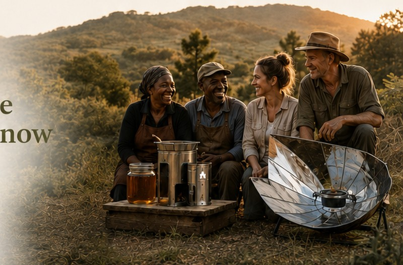
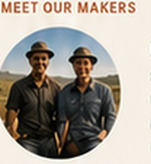
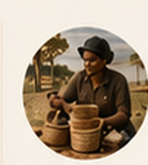
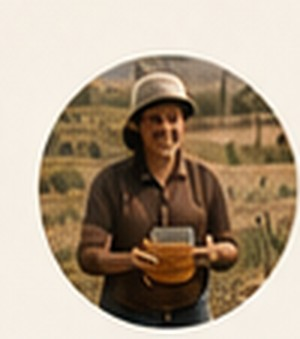
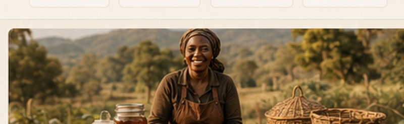

Made With Love
By People We Know
Useful things. Real makers. Local stories.
The Co-Op brings together the work of local makers, growers and doers—creating quality products that make life better and support our community.

and small businesses
with skill and integrity
and resilient community
a better future
and trust



Ray
Solar cookers &
rocket stoves
Built to last.MEET RAY →
Eshelby & Co.
Hand-forged
metalwork
Practical. Timeless.MEET ESHELBY →

Hamba Bambu
Handwoven baskets
& homeware
Made with care.MEET HAMBA BAMBU →

The Family Farm
Honey, produce
& more
Shared with you.MEET THE FARM →
More Than Products.
We’re Building A Community.
When you buy from The Co-Op, you’re supporting local livelihoods, traditional skills and a more sustainable way of life.
OUR STORYIt Started With A Simple Idea.
When somebody around us makes something good, useful and honest, we want to help them find a market.
Some products come from The Family Farm. Others come from friends, neighbours and makers we know personally. The Co-Op brings them together in one curated place.
This is not about filling shelves. It’s about real products, practical skills and the people behind them.
Makers
Create
People grow, build, cook, forge and make.
We
Curate
We choose things we know and trust.
You
Discover
The Co-Op gives them a place to be seen.
Communities
Grow
More value stays with local makers and families.
Ask About A Product.
We’re happy to help. Tell us what interests you and we’ll confirm availability, price, collection or delivery.
WhatsApp ordering and final checkout can be connected once the catalogue is confirmed.
SEND AN ENQUIRY